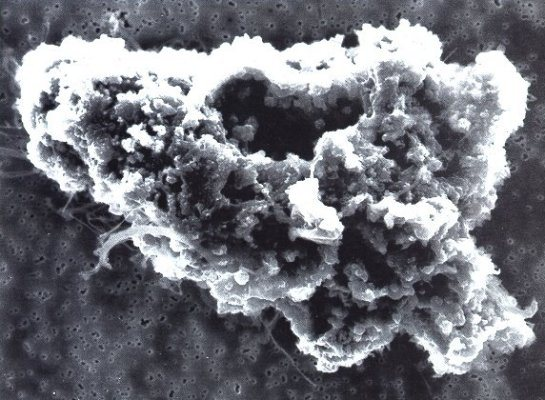

Thousands of tonnes of cosmic dust settle onto Earth every year, and NASA has spent decades catching some of it with high-altitude aircraft such as the ER-2. In a study published in Science Advances, researchers led by Lindsay Keller at NASA's Johnson Space Center in Houston report that a handful of these grains came from the Kuiper Belt, the icy zone beyond Neptune, and that they preserve the fingerprint of water unlike the water recorded in most meteorites.
The team examined 12 particles, each 10 to 30 micrometres across, using electron microscopes at Johnson and an ion microprobe at the University of California, Los Angeles, an instrument that measures isotopes in tiny samples.
Scars from a long trip
To work out where a grain came from, the researchers counted tracks left in it by energetic particles from the Sun. The longer a grain drifts through space, the more of these tracks it collects, and dust from the far reaches of the solar system spends a long time spiralling inward. These 12 carried roughly 100 times as many tracks as expected for dust from the asteroid belt or from comets in Jupiter's family, which points to the Kuiper Belt. In 2022, Keller and George Flynn of the State University of New York estimated that up to a quarter of the interplanetary dust reaching the inner solar system may come from there.

Inside, the grains are dominated by clays such as saponite and serpentine and other minerals that form only when rock reacts with fluids, in this case water mixed with carbon dioxide at low temperatures. They are also rich in carbon, about four times more than some carbon-rich meteorites. The authors suggest the starting material was glassy silicate grains dotted with tiny specks of iron-nickel metal and sulfides.
Heavy water from a separate store
Oxygen comes in three stable forms: oxygen-16, oxygen-17 and oxygen-18. The grains are enriched in the two heavier ones, which means the water that altered them was too. Using chemical models, the team estimates that the original water's ratio of oxygen-18 to oxygen-16 was up to roughly 15 percent above that of Earth's ocean water. That figure is an upper limit worked out from the minerals, because the water itself is long gone.
Scientists have expected ice like this in the outer solar system, where light-driven chemistry is thought to have pushed heavy oxygen into ice. NASA's Genesis mission supported the idea when it found that the Sun holds proportionally more light oxygen than Earth and most meteorites. But hard evidence was scarce, limited to hints in one primitive meteorite and in comet 67P.
"Compelling evidence for the presence of a major heavy water reservoir beyond the orbits of the gas giant planets." (Lindsay Keller and colleagues, NASA Johnson Space Center, in Science Advances)
Because the signature is so rare in meteorites, the team argues that this outer store of ice barely mixed with material closer to the Sun. They point to Saturn, and perhaps Uranus and Neptune, as a possible barrier: simulations predict a zone of higher gas pressure just outside Saturn's orbit in the solar system's first few million years, which could have stopped outer dust from drifting inward.
The limits
The study rests on just 12 grains, and their Kuiper Belt origin is inferred from track counts rather than traced directly. The isotope value is a model-based upper limit, and the giant-planet barrier is a hypothesis drawn from simulations. With no way to sample the Kuiper Belt directly for now, dust that falls to Earth remains one of the few windows onto it.